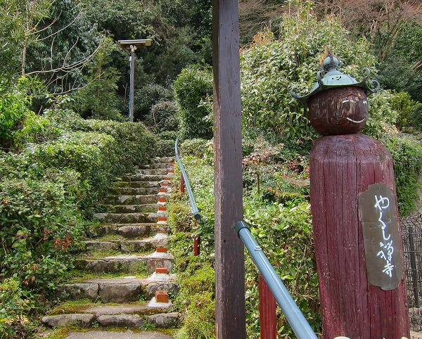
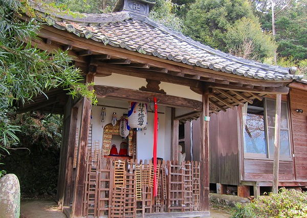
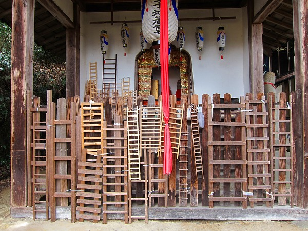
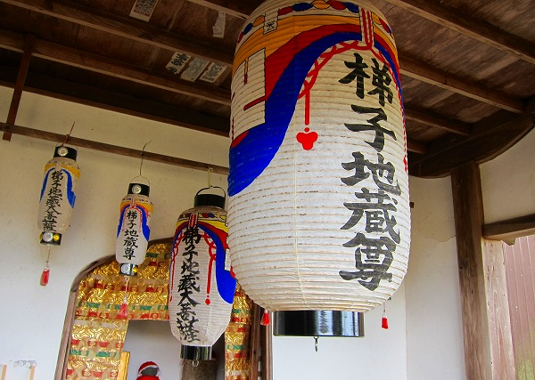
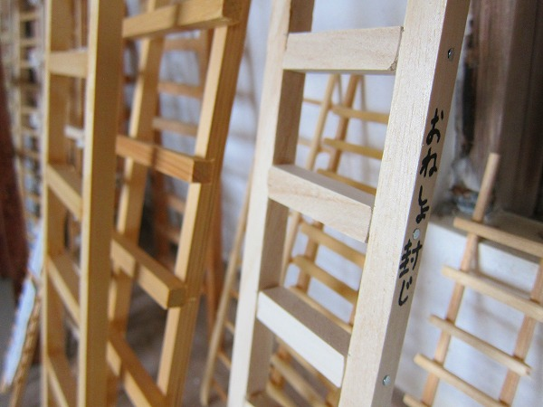
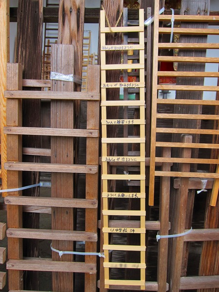
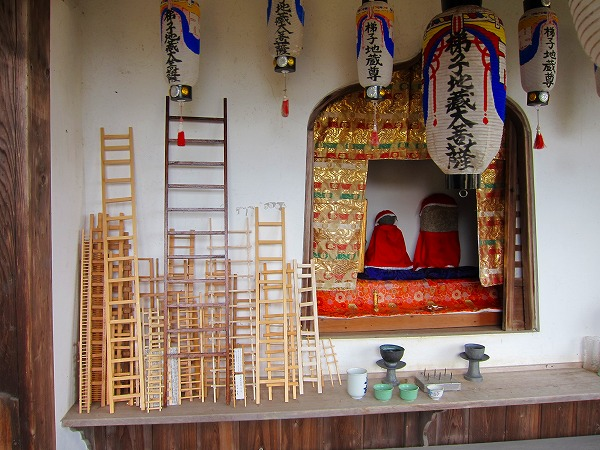
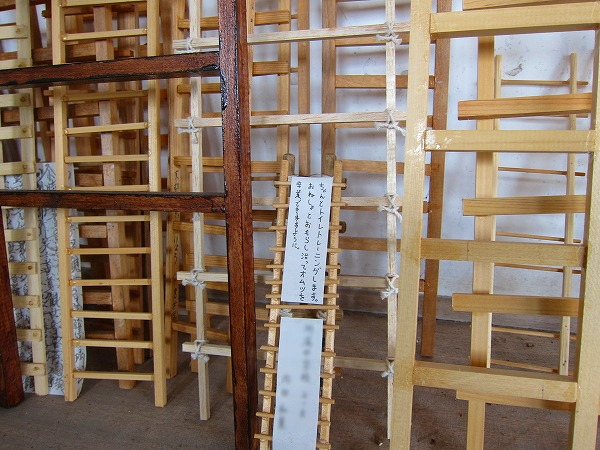

梯子地蔵/京都府
お酒の神様、松尾大社に参拝に行った時の事。
「肝臓の数値が下がりますように」 と、お酒の神様に怒られそうなお門違いのお願いをしつつ嵐山方面をぶらぶら歩いていたら奇妙なオブジェがあった。

やくし禅寺とある。
何となく珍寺センサーが反応し、その場でスマホで調べてみると何やら面白そうな香りがプンプン。
てなわけで階段を上ってみる。
すると目の前に現れたのは小さなお堂。

お堂の前に手すりのようなものがたくさんあるなー、と思ったら何とミニチュアの梯子だった。

梯子は1メートル程度のものが多かった。
細い木材で造ったオモチャみたいな梯子から実際に使えるのでは、というレベルの梯子まで様々。

梯子地蔵。というそうな
大量に奉納された梯子の中にメッセージが書かれたものがあった。

おねしょ封じのお地蔵さんなんですね。
さらに切実な願いが書かれた梯子が。

おねしょが治りますように
おむつが取れますように
ちゃんと練習します
おねしょが治るように
よろしくお願いします。
〇中学校3年
〇〇〇〇 〇〇才
確かに中学生でおねしょはキツイなあ。
願いが叶うといいね。
後日調べてみると、このお地蔵さんはやはりおねしょ封じの神様で、年の数と同じ段数の梯子を奉納するという。

大抵が数段～十数段の梯子だが、中には数十段の梯子もあった。
ああ、おねしょ封じは子供だけの願いではないのだなあ。と、変なところで高齢化社会を実感してしまったのであった。
梯子の奉納って、勝手なイメージだけど出世祈願とかそういう時に奉納しそうな気がする（いや、そんな奉納見たことないが）。
なんでおねしょ封じが梯子奉納に繋がるんだろう？
大人の階段昇る、的な？
お堂の傍らにこの地蔵の由緒書きがあった。
達筆過ぎて意味が判らない部分も多かったが要約する。
この際言っておくが、こういうお寺の由緒書きって達筆なのは結構だが、何で句読点が無くて判り難い表現の文章が多いんだろう。
へそ曲がりな私はついつい
「これって訪れた人に説明するために、というよりこの寺が如何に格式が高くて霊験があらたかなのかを誇示するためだけに書いてるんじゃないの？」
と勘ぐりたくなってしまう。
というわけで国語能力低めな私でも読みやすい字体と平易な文章で何とかなりませんかねえ。
…っと一通り毒づいたところで梯子地蔵の由緒を。
この寺を開いた恵堯という僧侶は元々比叡山延暦寺の僧で千日回峰行を達成した大阿闍梨だった。
ところがその恵堯大阿闍梨、修行中に粗相してしまった。
そのため叡山から嵐山に移りおねしょ封じの地蔵を崖の穴の中に安置したのだそうな。
（繰り返すが説明書きがムズくて間違ってるかも知れません。だから平易に書いてくれつってんだよ）
そして人々におねしょ封じの秘法を伝えたのだという。

ところがもうひとつの説もある。
（参考文献；信仰と迷信 磯部甲陽堂 富士川游 1928年）
松尾村の少年が比叡山に修行に入って修行をしていたのだが、寝小便を繰り返すので兄弟子が布団とその少年を外に追い出してしまったという。
その後、兄弟子の夢枕に少年が現れ、
「私はもうこの世にいません、地蔵となっておねしょに苦しむ人を救いたい」
と告げた。
気になった兄弟子が少年の故郷の松尾村に行くと、崖の上にお地蔵さんがいたそうな。
そこで兄弟子はこれこそ少年の生まれかわり、とその地蔵を祀ったそうな。
どちらも真実味の薄い話だが、いずれにせよ地蔵は元々崖の上にあったため梯子を使って参拝していたという点は事実のようだ。
多分おねしょが治るとお礼に新しい梯子を寄贈したのだろう。
その後、梯子地蔵の評判が広まり、現在の場所に遷され、梯子は必要なくなった。
それでも梯子はこのお地蔵さんのシンボルとなっていたため奉納物としてその形骸を留めてた、というプロセスがおねしょ封じに梯子を奉納する理由なのだろう。
何だか不思議な話だが、変わったモノが奉納されるケースって案外そんな紆余曲折があるのかも知れないですね。
2017.04.
珍寺大道場 HOME